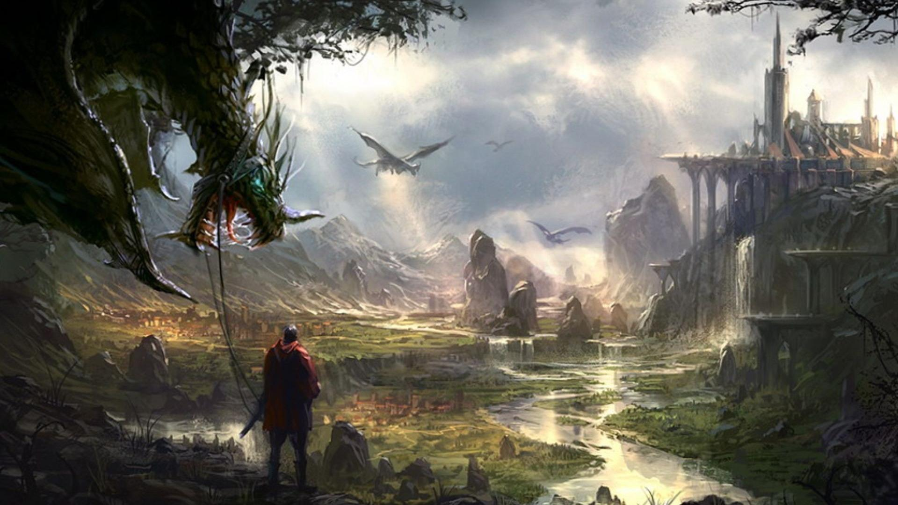

This is 3D MMO that doesn't have classes, but instead uses an AI to distribute skills based on the characters development.
After creating a character you will be thrown into a world where power is king, a person without mastery will certainly fail. However, this world will help you. You'll start your adventures as an apprentice to your choice of a pathway.
As you gain levels and move forward in your path our AI will follow your choices closely and reccomend to you skills in similar trees, as you narrow down those trees you will find yourself in a more niche poisition.
First you'll have to discover your calling. Following the guild masters reccomendation you will take yourself to the towns tutors, after checking one, or all of them out you can set your mind on a path. Its up to you to sharpen that blade of yours.